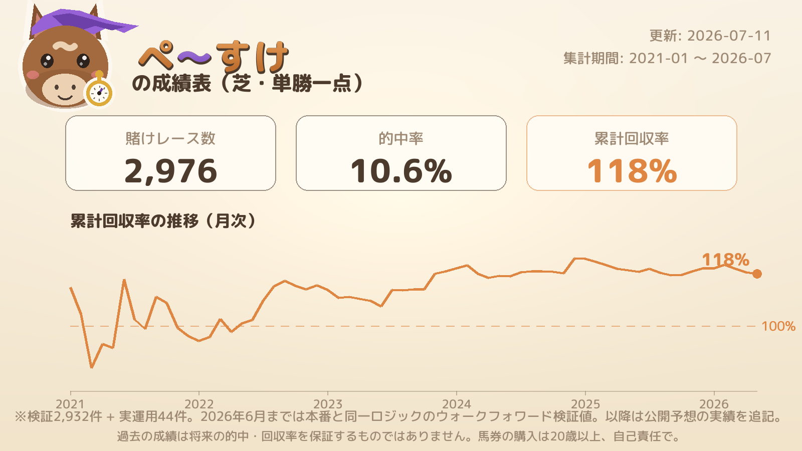

ぺ～すけ
展開を読む、🎯中穴3連複AI
現在の主力は🎯中穴3連複（芝）。集計期間: 2026.01.04 〜 2026.07.19
軸1（AI予想1位）が単勝5倍以上のレースのみ（実運用基準）
参考: 全レース（軸1のオッズで絞らない）
軸1（AI予想1位）× 軸2（単勝10〜25倍の中でAI評価が最も高い馬）の2頭軸、 3着目はAI評価上位3頭への流し。日々の運用実績（収支記録）は軸1が単勝5倍以上の レースのみを対象にしていますが、参考として全レースの数字も両方公開しています。
| 日付 | レース | 組み合わせ | 払戻 |
|---|---|---|---|
| 2026.7.26 | 中京 2R 芝 2歳新馬 |
軸 1-4（中穴側 15.3倍） 流し 3・5・6 | 5,560円 |
| 2026.7.25 | 中京 5R 芝 3歳未勝利 |
軸 3-4（中穴側 13.7倍） 流し 10・12・15 | 9,770円 |
| 2026.6.28 | 小倉 11R 芝 紫川S |
軸 2-5（中穴側 22.4倍） 流し 8・6・7 | 5,380円 |
| 2026.5.16 | 新潟 6R 芝 3歳未勝利 |
軸 16-15（中穴側 19.6倍） 流し 11・9・1 | 92,560円 |
| 2026.5.3 | 京都 5R 芝 3歳未勝利 |
軸 9-8（中穴側 12.2倍） 流し 5・11・3 | 10,640円 |
| 2026.4.19 | 阪神 7R 芝 3歳1勝クラス |
軸 1-6（中穴側 12.1倍） 流し 2・4・7 | 2,580円 |
| 2026.4.11 | 阪神 11R 芝 阪神牝馬S |
軸 5-3（中穴側 11.3倍） 流し 1・10・2 | 3,820円 |
| 2026.3.29 | 中京 6R 芝 4歳以上1勝クラス |
軸 5-3（中穴側 21.8倍） 流し 10・4・8 | 12,440円 |
| 2026.3.14 | 中京 9R 芝 鶴舞特別 |
軸 1-2（中穴側 24.5倍） 流し 7・8・6 | 13,730円 |
| 2026.3.7 | 中山 9R 芝 潮来特別 |
軸 5-12（中穴側 21.2倍） 流し 9・7・8 | 2,330円 |
| 2026.3.7 | 中山 12R 芝 4歳以上1勝クラス |
軸 4-3（中穴側 19.4倍） 流し 11・8・16 | 2,500円 |
| 2026.2.28 | 小倉 9R 芝 背振山特別 |
軸 12-15（中穴側 11.9倍） 流し 16・14・9 | 6,290円 |
| 2026.2.28 | 小倉 12R 芝 4歳以上1勝クラス |
軸 7-10（中穴側 10.8倍） 流し 18・5・9 | 24,100円 |
| 2026.2.21 | 小倉 6R 芝 3歳未勝利 |
軸 5-14（中穴側 19.2倍） 流し 2・10・4 | 17,180円 |
| 2026.1.25 | 小倉 5R 芝 3歳新馬 |
軸 6-13（中穴側 22.9倍） 流し 1・14・9 | 4,430円 |
| 2026.1.18 | 中山 7R 芝 4歳以上2勝クラス |
軸 4-5（中穴側 15.4倍） 流し 3・2・1 | 5,290円 |
この数字について: 2026年分は、当時実際に本番で出力していたAI予想（再学習なし）をそのまま使い、 netkeibaの結果ページから実際の着順・3連複払戻をスクレイピングして判定したものです。 馬券を購入した記録ではありません。7-22の機能公開以降は、実際の運用結果を追記していきます。
集計期間: 2021-01 〜 2026-07（更新: 2026-08-16）

| 期間 | 賭け数 | 的中率 | 回収率 |
|---|---|---|---|
| 2021_1 | 235 | 9.4% | 92.0% |
| 2021_2 | 345 | 9.3% | 99.0% |
| 2022_1 | 208 | 10.1% | 113.0% |
| 2022_2 | 323 | 10.8% | 147.0% |
| 2023_1 | 259 | 7.7% | 85.0% |
| 2023_2 | 333 | 13.8% | 162.0% |
| 2024_1 | 249 | 10.4% | 106.0% |
| 2024_2 | 309 | 11.3% | 163.0% |
| 2025_1 | 215 | 11.2% | 75.0% |
| 2025_2 | 295 | 12.2% | 125.0% |
| 2026_1 | 161 | 8.7% | 95.0% |
| 運用中 | 23 | 4.3% | 61.0% |
2026年6月までの成績は、本番と同一ロジック（LambdaRank・直近2期間ローリング学習）による ウォークフォワード検証値です。買いルールは「AIの予想確率がオッズを上回る馬（該当なければAI1位）を、 単勝オッズ5〜25倍の範囲で1頭だけ」。負けている期間もそのまま掲載しています。 現在は🎯中穴3連複へ主力を移行中です。